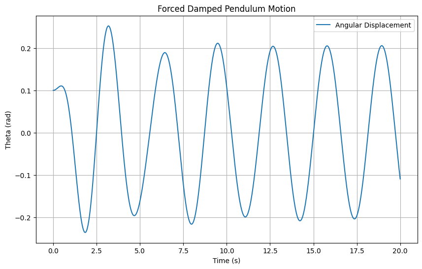
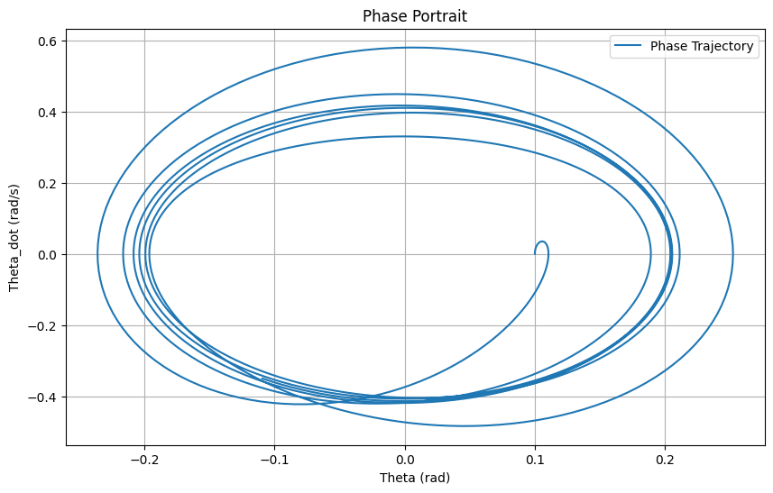

Problem 2
1. Theoretical Foundation
The motion of a forced damped pendulum is governed by the following nonlinear differential equation:
Where: - \(\theta\) is the angular displacement, - \(b\) is the damping coefficient, - \(g\) is the gravitational acceleration (9.81 m/s²), - \(l\) is the pendulum length, - \(F\) is the amplitude of the external driving force, - \(\omega_d\) is the driving frequency, - \(t\) is time.
Small-Angle Approximation
For small angles (\(\theta \ll 1\)), \(\sin(\theta) \approx \theta\), simplifying the equation to a linear damped-driven oscillator:
Where \(\omega_0 = \sqrt{\frac{g}{l}}\) is the natural frequency. The general solution consists of a homogeneous solution (transient) and a particular solution (steady-state):
- Homogeneous solution: \(\theta_h(t) = A e^{-\frac{b}{2}t} \cos(\omega t + \phi)\), where \(\omega = \sqrt{\omega_0^2 - \left(\frac{b}{2}\right)^2}\).
- Particular solution: \(\theta_p(t) = C \cos(\omega_d t) + D \sin(\omega_d t)\), with coefficients determined by substituting into the equation.
The steady-state amplitude exhibits resonance when \(\omega_d \approx \omega_0\), maximized when \(\omega_d = \sqrt{\omega_0^2 - \frac{b^2}{2}}\), amplifying energy input significantly.
2. Analysis of Dynamics
Influence of Parameters
- Damping Coefficient $ b $: Higher \(b\) reduces amplitude and prevents chaos by dissipating energy, stabilizing the system.
- Driving Amplitude (\(F\)): Increasing \(F\)can push the system from periodic to chaotic motion, especially at specific frequencies.
- Driving Frequency (\(\omega_d\)): Near \(\omega_0\), resonance occurs; far from \(\omega_0\), quasiperiodic or chaotic behavior emerges.
Transition to Chaos
For large amplitudes or specific \(\omega_d\) , the nonlinear \(\sin(\theta)\) term dominates, leading to chaotic motion. This is observable via phase portraits and Poincaré sections, showing a shift from closed orbits (periodic) to scattered points (chaotic).
3. Practical Applications
- Energy Harvesting: Piezoelectric devices use forced oscillations to convert mechanical energy to electrical energy.
- Suspension Bridges: Damping and forcing model wind-induced vibrations, preventing resonance disasters (e.g., Tacoma Narrows).
- Oscillating Circuits: Driven RLC circuits mirror pendulum dynamics, applicable in signal processing.
4. Implementation
Computational Model
We use the 4th-order Runge-Kutta (RK4) method to solve the nonlinear equation numerically. Below are Python scripts for simulation, visualization, and animation.
import numpy as np
import matplotlib.pyplot as plt
from scipy.integrate import odeint
# Parameters
g = 9.81 # gravity (m/s^2)
l = 1.0 # length (m)
b = 0.5 # damping coefficient
F = 1.2 # driving amplitude
omega_d = 2.0 # driving frequency
omega_0 = np.sqrt(g / l)
# Differential equation
def pendulum_deriv(state, t, b, omega_0, F, omega_d):
theta, theta_dot = state
dtheta_dt = theta_dot
dtheta_dot_dt = -b * theta_dot - omega_0**2 * np.sin(theta) + F * np.cos(omega_d * t)
return [dtheta_dt, dtheta_dot_dt]
# Time array
t = np.linspace(0, 20, 1000)
# Initial conditions
theta0 = 0.1 # initial angle (rad)
theta_dot0 = 0.0 # initial angular velocity (rad/s)
state0 = [theta0, theta_dot0]
# Solve ODE
solution = odeint(pendulum_deriv, state0, t, args=(b, omega_0, F, omega_d))
# Extract results
theta = solution[:, 0]
theta_dot = solution[:, 1]
# Plotting
plt.figure(figsize=(10, 6))
plt.plot(t, theta, label='Angular Displacement')
plt.xlabel('Time (s)')
plt.ylabel('Theta (rad)')
plt.title('Forced Damped Pendulum Motion')
plt.legend()
plt.grid()
plt.show()
# Phase portrait
plt.figure(figsize=(10, 6))
plt.plot(theta, theta_dot, label='Phase Trajectory')
plt.xlabel('Theta (rad)')
plt.ylabel('Theta_dot (rad/s)')
plt.title('Phase Portrait')
plt.legend()
plt.grid()
plt.show()
Animation Script
import numpy as np
import matplotlib.pyplot as plt
from matplotlib.animation import FuncAnimation
from scipy.integrate import odeint
# Parameters
g = 9.81
l = 1.0
b = 0.5
F = 1.2
omega_d = 2.0
omega_0 = np.sqrt(g / l)
# Differential equation
def pendulum_deriv(state, t, b, omega_0, F, omega_d):
theta, theta_dot = state
dtheta_dt = theta_dot
dtheta_dot_dt = -b * theta_dot - omega_0**2 * np.sin(theta) + F * np.cos(omega_d * t)
return [dtheta_dt, dtheta_dot_dt]
# Time array
t = np.linspace(0, 20, 1000)
state0 = [0.1, 0.0]
solution = odeint(pendulum_deriv, state0, t, args=(b, omega_0, F, omega_d))
theta = solution[:, 0]
# Animation setup
fig, ax = plt.subplots(figsize=(6, 6))
ax.set_xlim(-1.5, 1.5)
ax.set_ylim(-1.5, 1.5)
line, = ax.plot([], [], 'o-', lw=2)
def init():
line.set_data([], [])
return line,
def animate(i):
x = l * np.sin(theta[i])
y = -l * np.cos(theta[i])
line.set_data([0, x], [0, y])
return line,
ani = FuncAnimation(fig, animate, init_func=init, frames=len(t), interval=20, blit=True)
plt.title('Forced Damped Pendulum Animation')
plt.grid()
ani.save('pendulum_animation.mp4', writer='ffmpeg')
plt.show()

